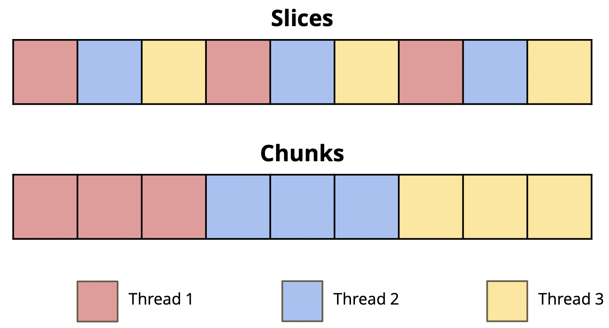

Lab 8: TLP
Deadline: Thursday, July 25, 11:59:59 PM PT
Setup
You must complete this lab on the hive machines (not your local machine). See Lab 0 if you need to set up the hive machines again.
In your labs directory on the hive machine, pull any changes you may have made in past labs:
Still in your labs directory on the hive machine, pull the files for this lab with:
If you run into any git errors, please check out the common errors page.
OpenMP
OpenMP stands for Open specification for Multi-Processing. It is a framework that offers a C interface. It is not a built-in part of the C language -- most OpenMP features are compiler directives. (One example of a compiler directive you've seen in the past is #include.)
Benefits of multi-threaded programming using OpenMP include:
- A very simple interface that allows a programmer to separate a program into serial regions and parallel regions.
- Convenient synchronization control (data race bugs in threads are very hard to trace).
Example: OpenMP Hello World
Consider the sample hello world program (openmp_example.c), which prints "hello world from thread #" from each thread:
int
This program will create a team of parallel threads. Each thread prints out a hello world message, along with its own thread number.
Let's break down the #pragma omp parallel line:
#pragmatells the compiler that the rest of the line is a directive.ompdeclares that the directive is for OpenMP.parallelsays that the following block statement -- the part inside the curly braces ({/}) -- should be executed in parallel by different threads.
IMPORTANT: When writing your own code, ensure that you place the opening curly brace on a new line. Do not put it on the same line as the directive.
You can change the number of OpenMP threads by setting the environment variable OMP_NUM_THREADS or by using the omp_set_num_threads function before the parallel section in your program.
Try running the program:
If you run ./openmp_example a couple of times, you may notice that the printed numbers are not always in increasing order and will most likely vary across runs. This is because we didn't specify any sort of synchronization options, so OpenMP will not enforce any execution order. (More on that later.) It is also important to note that the variable thread_id is defined inside the parallel block, which means that each thread has its own copy of thread_id. In general with OpenMP, variables declared inside the parallel block will be private to each thread, but variables declared outside a parallel block will be shared across all threads. There are ways to override this, but more on that later.
Exercise 1: Vector Addition
Vector addition is a naturally parallel computation, since it's an elementwise operation (element i of the result vector does not depend on elements j != i), so it makes for a good first exercise. The v_add() functions inside ex1.c will store the sum of input vectors x and y into the result vector z. A first attempt at this might look like:
void
Try running the tests:
The testing framework will time the function execution for different thread counts. You should observe that this implementation performs worse as we increase the number of threads! Why?
The issue is that each thread is executing all of the code within the omp parallel block. If we have 8 threads, we'll actually be performing the same vector addition 8 times! Not only that, but various threads writing to the same variables in memory may cause a decrease in performance due to cache synchronization. Rather than have each thread run every iteration of the for loop, we need to split the for loop iterations across all the threads so each thread does only a portion of the work.
OpenMP has built-in functionality for dividing up the work of for loops among threads. To tell openMP to split up the work among multiple threads, you would use #pragma omp parallel for as seen below:
void
Note that there are no opening and closing brackets around the parallel section. The #pragma omp parallel for directive can only be placed directly before a for loop.
There are two ways that you can split up work:

- Implement
v_add_optimized_adjacent()inex1.c, which separates the vectors into element-wise slices.- If we have 3 threads, thread 0 will handle all elements that are 0 modulo 3 (such as 0, 3, 6, etc), thread 1 will handle all elements that are 1 modulo 3 (such as 1, 4, 7, etc), and thread 2 will handle all elements that are 2 modulo 3 (such as 2, 5, 8, etc).
- Implement
v_add_optimized_chunks()inex1.c, which separates the vectors into contiguous chunks.- If we have 3 threads, thread 0 will handle the first third of the elements in the array, thread 1 will handle the second third, and thread 2 will handle the last third. Remember to handle the tail case -- depending on your chunking logic, the last chunk may have slightly more or less elements than the others.
Your implementations should use the following 2 functions -- don't hard code thread counts or thread IDs:
int omp_get_num_threads()- returns the current total number of OpenMP threads. Note that the number of threads will be1outside of an OpenMPparallelsection.int omp_get_thread_num()- returns the thread number of the current thread, commonly used as thread ID.
For this exercise, you CANNOT use #pragma omp parallel for. You must manually split up the work of the threads.
Remember that speedup may not increase as much after a certain number of threads, since part of the program is not parallelizable.
OpenMP Directives
Usage for OpenMP directives can be found on the OpenMP summary card.
For
In exercise 1, you manually assigned iterations within a for loop to individual threads. OpenMP can take care of this automatically with the for directive! You can either add a #pragma omp for to an existing for loop within a #pragma omp parallel, or use #pragma omp parallel for by itself.
Critical
The code in a critical section can only be executed by a single thread at any given time. Thus, having a critical section naturally prevents multiple threads from reading and writing to the same data, a problem that would otherwise lead to data races. OpenMP provides the critical primitive to allow you to perform computations within a critical section.
Reduction
Critical sections may be slow, so OpenMP has a built in way to reduce this problem through the use of the reduction keyword. The reduction keyword will increase the parallelizability of your code by automatically reducing the amount of code contained within the critical section. To use this keyword, you must specify the the variable that should be in a critical section and the operation being performed on that variable.
Exercise 2: OpenMP Dot Product
At first glance, implementing a dot product might seem not too different from v_add from exercise 1, since we should now just perform elementwise multiplication instead of addition. The challenge is how to add the products into one variable (aka reduction) to get our final answer. If multiple threads try to add their results to the same variable at the same time, it will lead to a data race which will result in an incorrect result.
Try running the tests now, only the naive solution should pass since the other optimizations are not implemented.
- Implement
dotp_criticalusing OpenMP and a critical section.- Notice how the performance gets much worse as the number of threads go up? By putting all of the work of reduction in a critical section, we have flattened the parallelism and made it so only one thread can do useful work at a time (not exactly the idea behind thread-level parallelism).
- This contention is problematic; each thread is constantly fighting for the critical section and only one is making any progress at any given time. As the number of threads go up, so does the contention, and the performance pays the price.
- Implement
dotp_reductionusing OpenMP and a reduction statement.- Hint: the variable that should only be accessed by one thread at a time is
global_sumand the operation being performed on it is addition (+).
- Hint: the variable that should only be accessed by one thread at a time is
- Implement
dotp_manual_reductionusing OpenMP and the idea of reduction, but do not use thereductionkeyword.- Hint: create variables for each thread and only add to the final sum when absolutely necessary.
Submission
Save, commit, and push your work, then submit to the Lab 8 assignment on Gradescope.